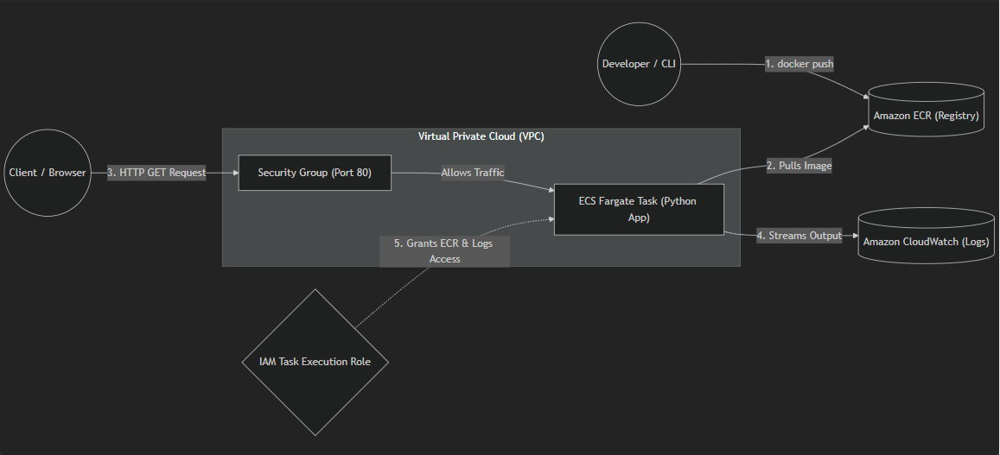
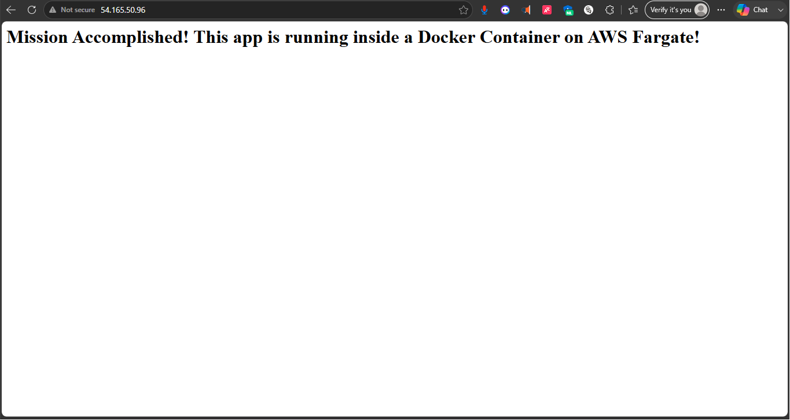

Projects / Project 04
Dockerised app on ECS Fargate
From a Python file to a container running on AWS with no servers to manage, built with the AWS CLI so I understood every API call before automating it.
The problem
I wanted to run a long-lived web process on AWS without managing a server. A short-lived function does not fit a process that must keep listening for HTTP, so I used containers on Fargate.
Architecture

How I built it
- Dockerised a Flask app on python:3.12-slim and tested it locally, mapping -p 9090:80 so it would not collide with a web server already on the host's port 80.
- Created an ECR repository from the CLI, authenticated Docker with a short-lived token and pushed the image.
- Wrote an IAM task execution role whose trust policy allows only ecs-tasks.amazonaws.com to assume it, with permission to pull the image and write logs.
- Created a security group admitting inbound port 80, registered a task definition (awsvpc, 0.25 vCPU, 512 MB) and ran the task with a public IP.

Engineering decisions
Fargate rather than Lambda or EC2
The app is a long-running HTTP process, which does not suit a function with an execution time limit, and Fargate removes the OS patching and capacity planning EC2 would need.
Two independent security layers
The security group controls network traffic; the IAM role controls what the task may call in AWS. Neither is trusted to do the other's job.
Protect the host first
Before heavy image builds on a VPS already serving production traffic, I added a 2 GB swap file to avoid the kernel's out-of-memory killer taking something down.
Issues I hit and fixed
100% packet loss on the local machine
Cause: firewall/antivirus rules on my Windows and WSL2 setup dropped ICMP and TCP, so the AWS CLI could not download.
Fix: moved the work to a remote Linux VPS over SSH.
Port conflict with an existing app
Cause: the VPS already served a web app on port 80.
Fix: Docker port mapping to 9090, isolating the container's network namespace and avoiding any downtime.
Limitations and what I did next
Scope. A self-directed lab; no live endpoint is published.